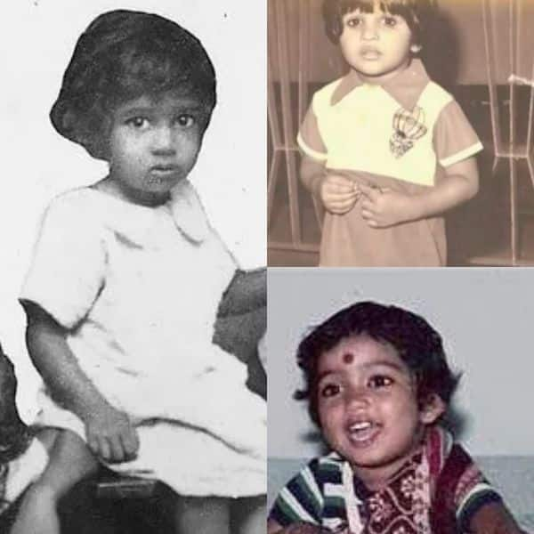
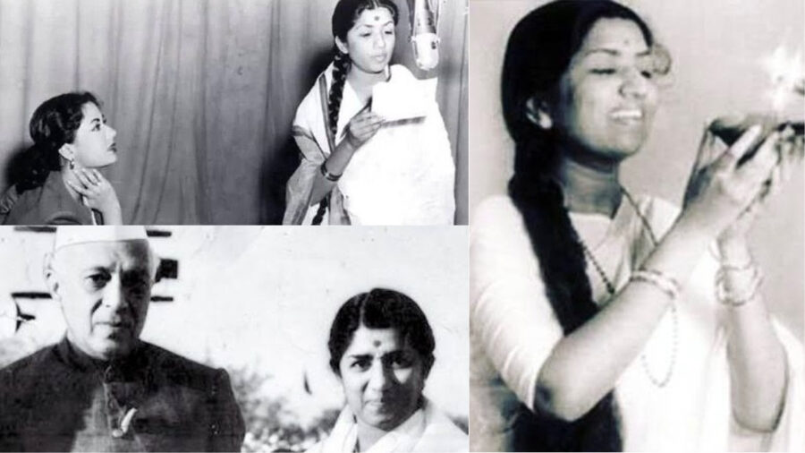
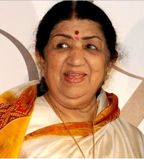
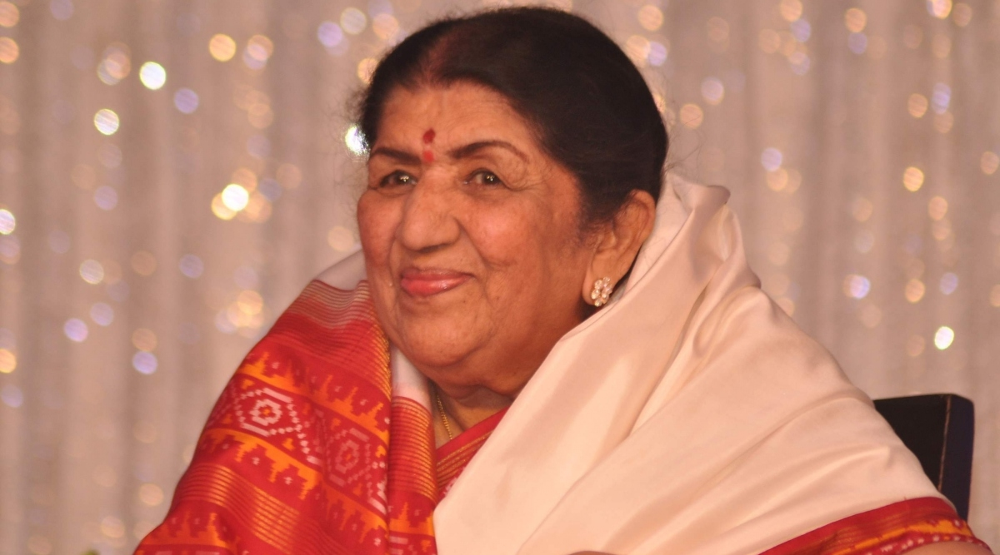

About
Lata Mangeshkar(born as Hema Mangeshkar; 28 September 1929 – 6 February 2022) was an Indian playback singer and occasional music composer. She is widely considered to have been one of the greatest and most influential singers in India.Her contribution to the Indian music industry in a career spanning eight decades gained her honorific titles such as the "Queen of Melody", "Nightingale of India", and "Voice of the Millennium".
Lata recorded songs in over thirty-six Indian languages and a few foreign languages, though primarily in Marathi, Hindi, and Bengali. Her foreign languages included English, Indonesian, Russian, Dutch, Nepali, and Swahili.She received several accolades and honors throughout her career. In 1989, the Dadasaheb Phalke Award was bestowed on her by the Government of India.In 2001, in recognition of her contributions to the nation, she was awarded the Bharat Ratna, India's highest civilian honour; she is only the second female singer, after M. S. Subbulakshmi, to receive this honour.France conferred on her its highest civilian award, Officer of the National Order of the Legion of Honour, in 2007.
She was the recipient of three National Film Awards, 15 Bengal Film Journalists' Association Awards, four Filmfare Best Female Playback Awards, two Filmfare Special Awards, the Filmfare Lifetime Achievement Award and many more. In 1974, she was one of the first Indian playback singers to perform at the Royal Albert Hall in London, UK. Her last recorded song was "Saugandh Mujhe Is Mitti ki" released on 30 March 2019 as a tribute to the Indian Army and the Nation. At one point, she appeared in the Guinness World Records, which listed her as the most recorded artist in history between 1948 and 1987.
Awards
Mangeshkar won several awards and honours, including the Bharat Ratna (2001), India's highest civilian award, Padma Bhushan (1969), Padma Vibhushan (1999), Zee Cine Award for Lifetime Achievements (1999) Dadasaheb Phalke Award (1989), Maharashtra Bhushan Award (1997), NTR National Award (1999), Legion of Honour (2007), ANR National Award (2009), three National Film Awards and 15 Bengal Film Journalists' Association Awards. She also won four Filmfare Best Female Playback Awards. In 1969, she made the unusual gesture of giving up the Filmfare Best Female Playback Award in order to promote fresh talent. She was later awarded the Filmfare Lifetime Achievement Award in 1993 and Filmfare Special Awards in 1994 and 2004.
In 1984, the State Government of Madhya Pradesh instituted the Lata Mangeshkar Award in her honour. The State Government of Maharashtra also instituted a similar award in 1992. In 2009, she was awarded the title of Officer of the French Legion of Honour, France's highest order. In 2012, she was ranked number 10 in Outlook India's poll of the Greatest Indian since independence. Ustad Bade Ghulam Ali Khan said "kambakht, kabhi besuri na hoti" ("[she] is never off-key"). Actor Dilip Kumar once commented, "Lata Mangeshkar ki awaaz kudrat ki takhleek ka ek karishma hain", meaning "Lata Mangeshkar's voice is a miracle from God".
Lata Mangeshkar was included in the 'In Memoriam' segment at the 2022 British Academy Film and Television Awards (BAFTA). She also received honorary doctorates from the Sangeet Natak Akademi in 1989, Indira Kala Sangeet Vishwavidyalaya, Khairagarh, and Shivaji University in Kolhapur.
Tributes
Images
Childhood
 
singer Lata
 
Playlists
- https://youtu.be/dPltOfmz0-A
- https://youtu.be/hFpXv4eVfjo
- https://youtu.be/TLcY1HvnMnU
- https://youtu.be/3g2RJVjeUMw
- https://youtu.be/NqbEwC7zTQo